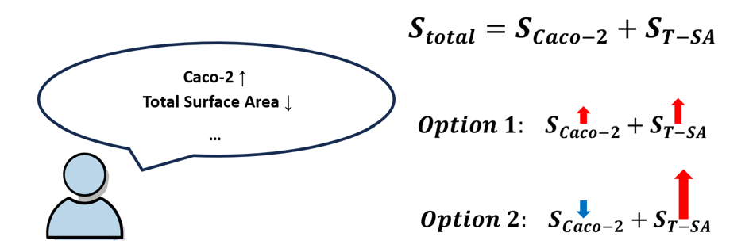
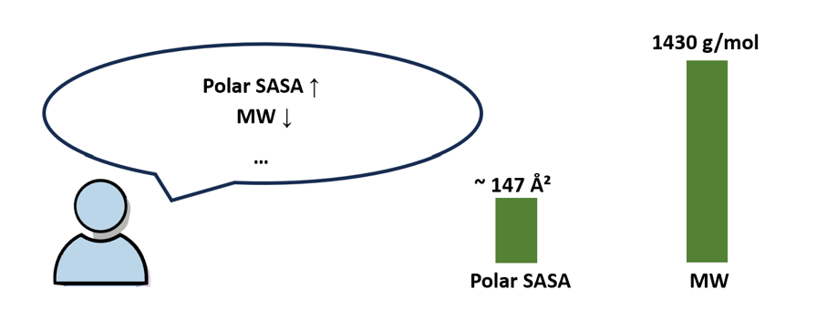
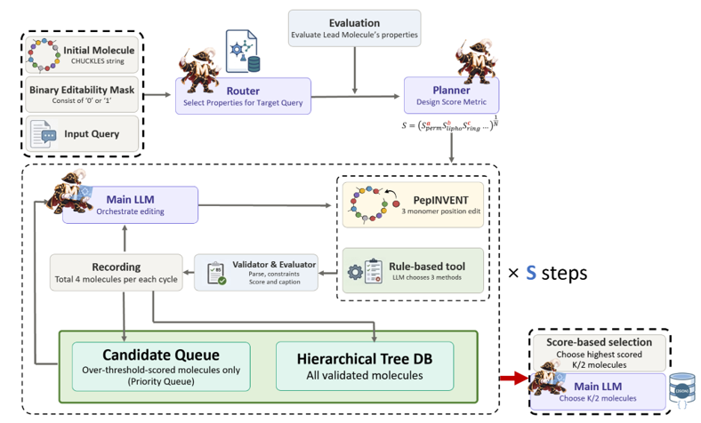
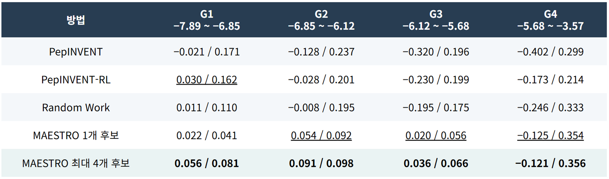
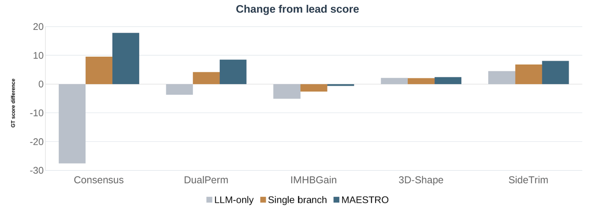

Overview
Why macrocyclic peptides need structure-aware, multi-objective search.
For macrocyclic peptides (MCPs), a single residue substitution or a change in configuration can alter how the ring folds and how polar groups are exposed. Optimization therefore requires a search that jointly handles conflicting property objectives given in natural language, residues that must be protected, and 3D-structure-dependent changes.
MAESTRO takes three inputs: the starting molecule as a CHUCKLES string, a Binary Editability Mask (BEM) marking which residues may be edited, and a natural-language Query. A Router selects which properties to compute, and a Planner converts the goals into a fixed scoring schema. Rather than generating molecule strings directly, the LLM chooses applicable edit sites and operations; the properties and edit rationale of every validated candidate are recorded in a hierarchical tree.


Core components
| Component | Role |
|---|---|
| Router & Planner | The Router selects which properties to compute from the Query and the property descriptions, without seeing the lead's property values. After the lead is evaluated, the Planner fixes INCREASE / DECREASE / MAINTAIN, reference values and ranges, and an importance weight (1–3). |
| Molecular evaluation | Evaluates CPMP's PAMPA and Caco-2, RDKit 2D properties and structural alerts, and optional 3D-conformer properties. The gap between a separate D-MPNN and CPMP's Caco-2 prediction is reported as a disagreement proxy. |
| Molecule editing | While keeping BEM-protected residues fixed, the LLM selects the site and operation of deterministic tools. When enabled, a PepINVENT fixed-mask branch produces additional candidates from the same parent. |
| Search memory | Valid candidates and their edit rationale are stored in hierarchical_tree_db; the next parent is drawn from a global score-priority queue. |
| Final selection | From the generated candidates (excluding the lead), the Top-K are chosen by score, by LLM, or by a hybrid, depending on configuration. |
The report registers 50 scorable properties (3 permeability, 33 2D properties, 4 chemical alerts, 10 3D properties). Not every property the Router selects enters the score: the Planner only places items whose direction it can justify into the objective function, and keeps the rest as observational signal for edit decisions. Each property score sᵢ is combined with its importance wᵢ into a total:
S = ( ∏ sᵢwᵢ )1 / ΣwᵢThe functional form of each score and the aggregation are fixed in code — the Planner does not invent arbitrary expressions.
Pipeline

- Goal construction. Validate the CHUCKLES, the BEM, and the macrocycle structure. The Router picks the requested and auxiliary properties from the Query, and only the selected properties are computed for the lead. The Planner fixes the improvement direction, reference values, and importances; the objective function is then frozen until the run ends.
- Structure-dependent evaluation. When needed, 125 conformers (default) are generated with ETKDGv3 and MMFF94s, and SASA, intramolecular hydrogen bonds, shape, and so on are computed as an equal-weighted arithmetic mean over all converged structures. No RMSD de-duplication and no single-lowest-energy shortcut are used.
- Candidate generation. A parent is popped from the score-priority queue. The LLM chooses edits among the sites allowed by the current molecule and the BEM. The implementation ships 28 graph-edit functions and 12 residue-edit operations; failed edits receive a validation reason and can be replanned. PepINVENT and a Skill Library that retrieves past edit cases are optional branches.
- Validation, search & selection. Chemical validity, ring, stereochemistry, protected residues, and global duplicates are checked. Every valid candidate is written to the tree DB with its parent ID, score, and edit rationale, and some are pushed onto the next search queue. After termination, the Top-K is chosen from all generated candidates, excluding the lead.
config/default.yaml sets max_steps: 3, tool.edit_k: 1, pepinvent.max_attempts: 0, skill_library.enabled: false, top_k_mode: score_only, top_k: 1. So the PepINVENT and LLM-final-selection branches in the figure are not active in a default run.
Experiments
1. Single-step edit comparison against the PepINVENT family
Table 4 of the report splits the CycPeptMPDB validation/test molecules into quartiles by measured Caco-2 and draws 6 from each quartile, giving 24 leads. The same edit mask is applied to each lead and the run is repeated 32 times; each cell reports the mean / standard deviation of the score improvement over the original. This score is a separate evaluation metric combining predicted Caco-2, cLogP, and chemical alerts.
The evaluation score is defined as S_eval = gate × (s_Caco-2³ · s_cLogP · s_alert)1/5. The gate is 1 when the molecule is a single connected fragment and the largest ring is ≥ 8. The Caco-2 term is a sigmoid of the prediction, the cLogP term is maximal in the 0–4 range, and the alert term rises as the number of SMARTS matches falls. This fixed comparison metric is distinct from the search score the Planner builds on each run.

MAESTRO 1 candidate generates a single edit, matching the generation budget of the PepINVENT family. MAESTRO up to 4 candidates generates several rule edits in one step and keeps the best; the PepINVENT branch is not used in this experiment. The latter's mean improvement is +0.056, +0.091, +0.036, −0.121 across G1–G4 — the highest among the comparison rows. G1–G3 show positive mean improvement; in G4 every method's mean is negative. The report reads G4 as the sigmoid score saturating at high Caco-2, which makes improvements hard to distinguish.
2. Multi-objective tasks and search-method comparison
Table 7 of the report evaluates five tasks: Consensus (Caco-2 improvement, prediction disagreement, 3D surface area), DualPerm (simultaneous Caco-2 and PAMPA improvement with lipophilicity maintained), IMHBGain (keep the N-methylation count, improve intramolecular hydrogen bonds), 3D-Shape (residue preservation with shape adjustment), and SideTrim (keep ring and residue counts, reduce molecular weight). Each task's ground-truth score is defined independently of the Planner's search score. All conditions run for at most 3 steps, with the final candidate chosen by score_only, Top-1.

In the figure, single branch is not a direct reproduction of the original TRACE implementation but an ablation that limits MAESTRO to one edit per step. LLM-only lets the LLM edit the CHUCKLES directly with no deterministic edit tools. MAESTRO scores higher than both comparison conditions on all five tasks and beats the original Lead on four. The exception is IMHBGain, where the Lead is 59.46 and MAESTRO is 58.82. In an additional run, raising only this task to 5 steps reached 60.16 — but that is not a same-step-budget comparison.
3. Rationale for the 3D evaluation settings
The report selected the default 3D settings through an ablation over 10 molecules and 5 seeds. A single lowest-energy conformer gave an SNR below 1 on shape descriptors such as NPR1 and NPR2, whereas the equal-weighted mean over converged conformers gave more stable molecule-to-molecule comparison. RMSD de-duplication removed on average about 8 of 500 generated conformers, and the mean relative difference in polar / total SASA was below 0.04% under the experimental conditions. On this basis the current pipeline uses 125 generated conformers, no RMSD de-duplication, and an equal-weighted mean over the converged conformers.
Limitations
The experimental scores and properties are values from prediction models and computed structures. The Caco-2 gap between CPMP and D-MPNN is a proxy for inter-model disagreement — it is not calibrated uncertainty, nor evidence of wet-lab reproducibility. Because different Queries carry different objectives and importances, absolute scores from different search runs should not be compared directly. The score saturation in G4 and the step-count sensitivity of IMHBGain both illustrate the influence of the evaluation metric and the search budget.